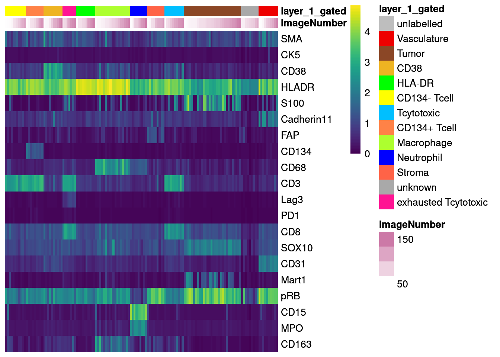
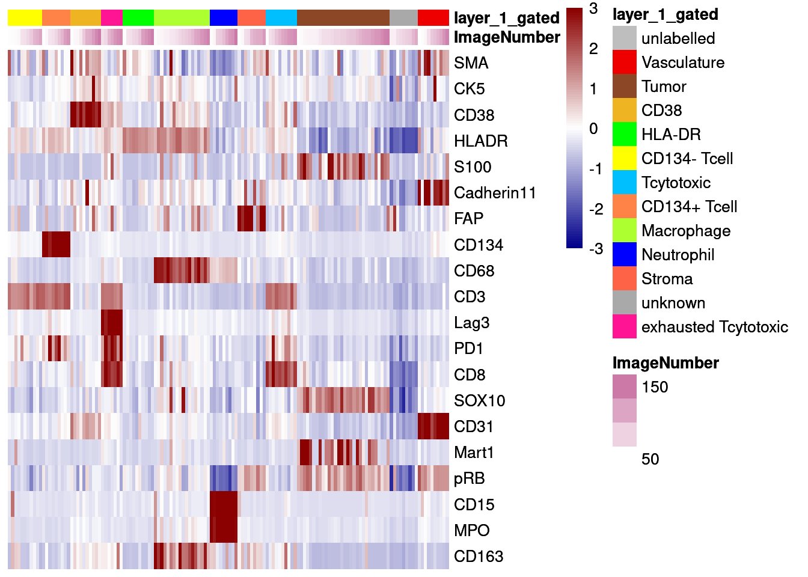
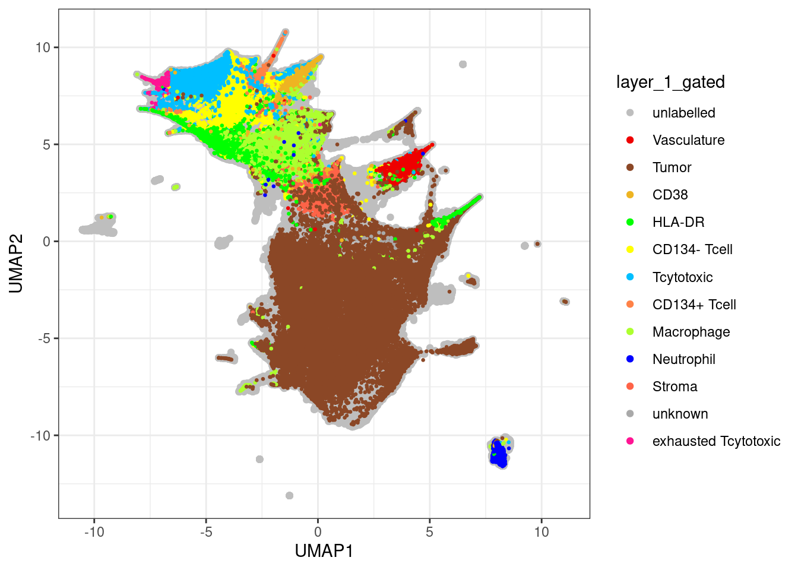
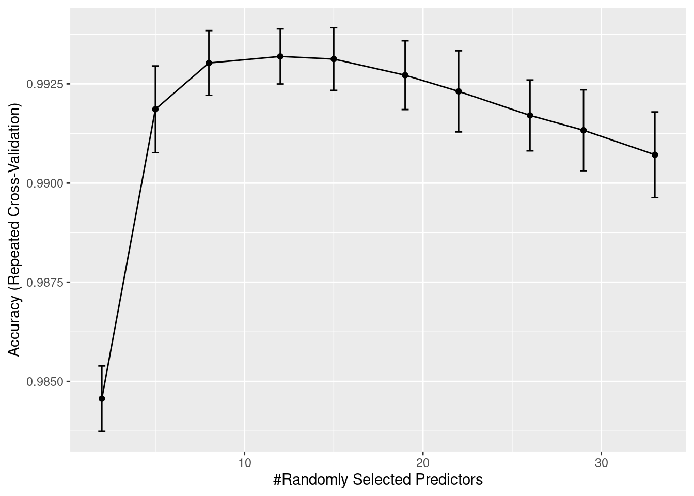
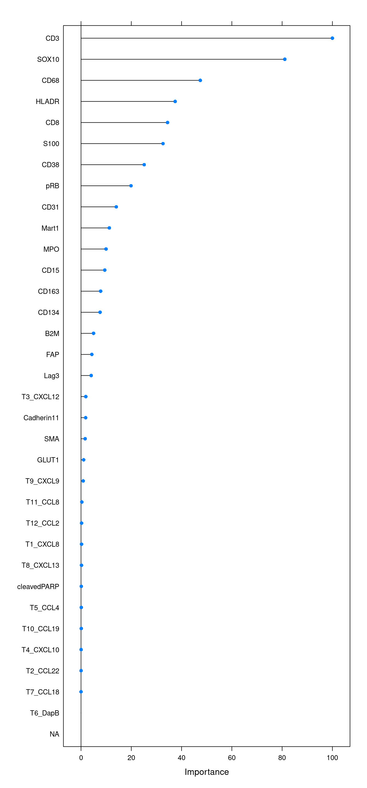
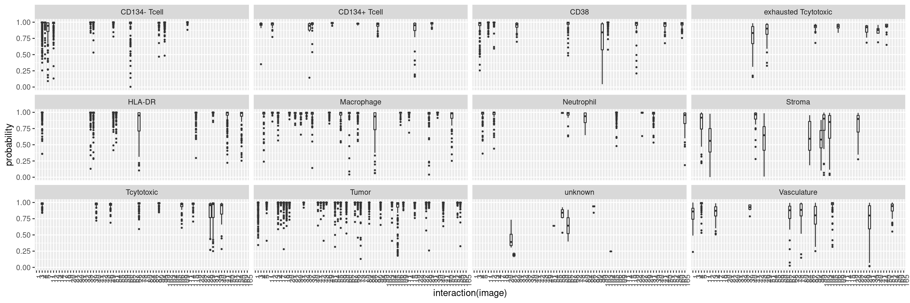
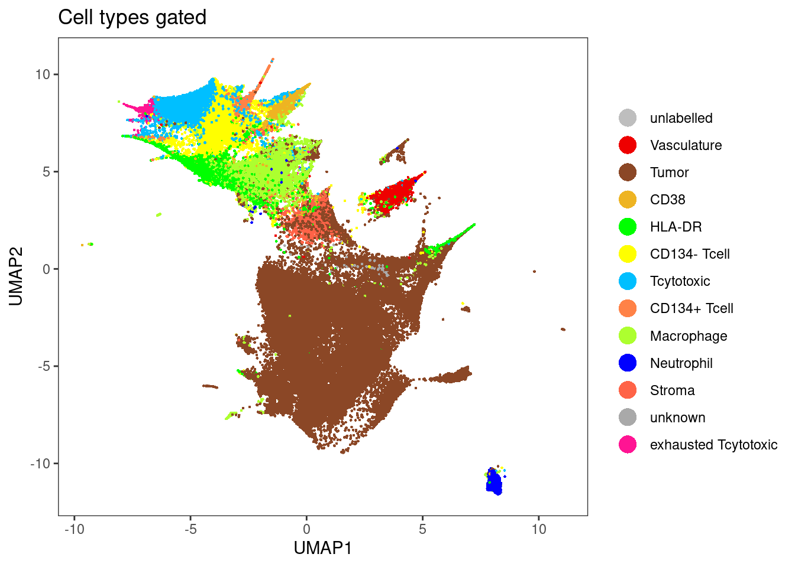
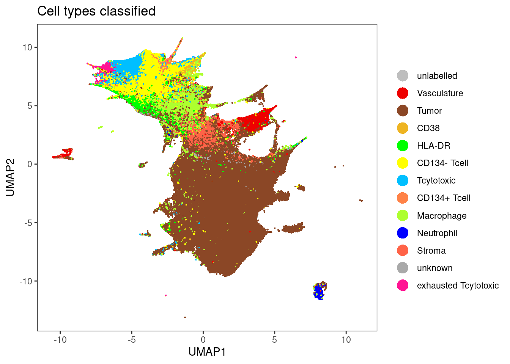
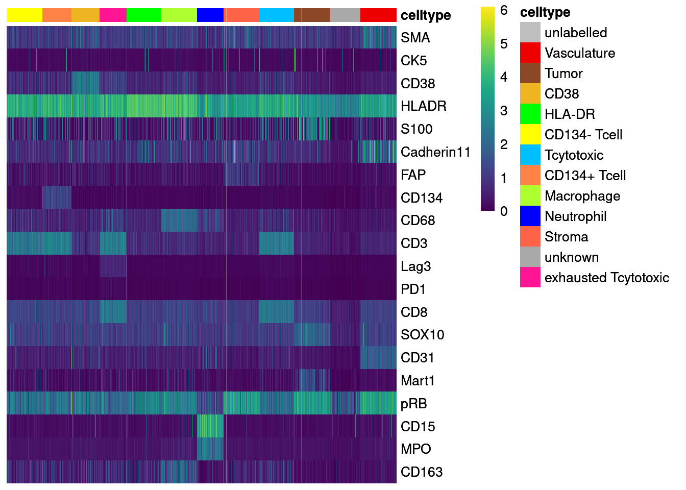
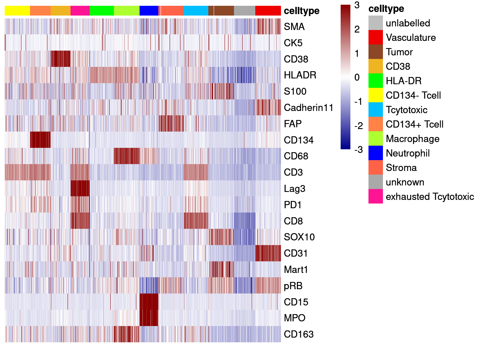

04_1_RNA_celltype_classification
toobiwankenobi
2020-07-28
Last updated: 2021-02-18
Checks: 6 1
Knit directory: melanoma_publication_old_data/
This reproducible R Markdown analysis was created with workflowr (version 1.6.2). The Checks tab describes the reproducibility checks that were applied when the results were created. The Past versions tab lists the development history.
The R Markdown file has unstaged changes. To know which version of the R Markdown file created these results, you’ll want to first commit it to the Git repo. If you’re still working on the analysis, you can ignore this warning. When you’re finished, you can run wflow_publish to commit the R Markdown file and build the HTML.
Great job! The global environment was empty. Objects defined in the global environment can affect the analysis in your R Markdown file in unknown ways. For reproduciblity it’s best to always run the code in an empty environment.
The command set.seed(20200728) was run prior to running the code in the R Markdown file. Setting a seed ensures that any results that rely on randomness, e.g. subsampling or permutations, are reproducible.
Great job! Recording the operating system, R version, and package versions is critical for reproducibility.
Nice! There were no cached chunks for this analysis, so you can be confident that you successfully produced the results during this run.
Great job! Using relative paths to the files within your workflowr project makes it easier to run your code on other machines.
Great! You are using Git for version control. Tracking code development and connecting the code version to the results is critical for reproducibility.
The results in this page were generated with repository version ee1595d. See the Past versions tab to see a history of the changes made to the R Markdown and HTML files.
Note that you need to be careful to ensure that all relevant files for the analysis have been committed to Git prior to generating the results (you can use wflow_publish or wflow_git_commit). workflowr only checks the R Markdown file, but you know if there are other scripts or data files that it depends on. Below is the status of the Git repository when the results were generated:
Ignored files:
Ignored: .DS_Store
Ignored: .Rproj.user/
Ignored: ._.DS_Store
Ignored: analysis/._clinical metadata preparation.Rmd
Ignored: code/.DS_Store
Ignored: code/._.DS_Store
Ignored: data/.DS_Store
Ignored: data/._.DS_Store
Ignored: data/data_for_analysis/
Ignored: data/full_data/
Ignored: output/.DS_Store
Ignored: output/._.DS_Store
Ignored: output/._protein_neutrophil.png
Ignored: output/._rna_neutrophil.png
Ignored: output/PSOCKclusterOut/
Ignored: output/bcell_grouping.png
Ignored: output/dysfunction_correlation.pdf
Unstaged changes:
Modified: .gitignore
Modified: analysis/04_1_Protein_celltype_classification.rmd
Modified: analysis/04_1_RNA_celltype_classification.rmd
Modified: analysis/04_2_RNA_classification_subclustering.rmd
Modified: analysis/04_2_protein_classification_subclustering.rmd
Modified: analysis/07_TCF7_PD1_gating.rmd
Modified: analysis/08_color_vectors.rmd
Modified: analysis/09_Tcell_Score.Rmd
Modified: analysis/10_Dysfunction_Score.rmd
Modified: analysis/11_Bcell_Score.Rmd
Modified: analysis/Figure_1.rmd
Modified: analysis/Figure_2.rmd
Modified: analysis/Figure_3.rmd
Modified: analysis/Figure_4.rmd
Modified: analysis/Figure_5.rmd
Modified: analysis/Supp-Figure_1.rmd
Modified: analysis/Supp-Figure_2.rmd
Modified: analysis/Supp-Figure_3.rmd
Modified: analysis/Supp-Figure_4.rmd
Modified: analysis/Supp-Figure_5.rmd
Note that any generated files, e.g. HTML, png, CSS, etc., are not included in this status report because it is ok for generated content to have uncommitted changes.
These are the previous versions of the repository in which changes were made to the R Markdown (analysis/04_1_RNA_celltype_classification.rmd) and HTML (docs/04_1_RNA_celltype_classification.html) files. If you’ve configured a remote Git repository (see ?wflow_git_remote), click on the hyperlinks in the table below to view the files as they were in that past version.
| File | Version | Author | Date | Message |
|---|---|---|---|---|
| Rmd | ee1595d | toobiwankenobi | 2021-02-12 | clean repo and adapt files |
| html | ee1595d | toobiwankenobi | 2021-02-12 | clean repo and adapt files |
| html | 3f5af3f | toobiwankenobi | 2021-02-09 | add .html files |
| Rmd | f9bb33a | toobiwankenobi | 2021-02-04 | new Figure 5 and minor changes in figure order |
| Rmd | 2ac1833 | toobiwankenobi | 2021-01-08 | changes to Figures |
| Rmd | 9442cb9 | toobiwankenobi | 2020-12-22 | add all new files |
| Rmd | d8819f2 | toobiwankenobi | 2020-10-08 | read new data (nuclei expansion) and adapt scripts |
| Rmd | a21c858 | toobiwankenobi | 2020-08-06 | adapt pipeline |
| Rmd | 941155c | toobiwankenobi | 2020-08-05 | Update 04_1_RNA_celltype_classification.rmd |
| Rmd | 2c11d5c | toobiwankenobi | 2020-08-05 | add new scripts |
| Rmd | 512d944 | toobiwankenobi | 2020-07-30 | update |
| Rmd | 054e957 | toobiwankenobi | 2020-07-30 | switch to Nils’s new pipeline |
| Rmd | ceedd46 | toobiwankenobi | 2020-07-28 | update scripts |
| Rmd | cf46cfa | toobiwankenobi | 2020-07-28 | create files |
Introduction
This script performs cell-type classification based on manually labelled cells. We will create increasing complexity for cell type labelling.
Preparations
knitr::opts_chunk$set(echo = TRUE, message= FALSE)
knitr::opts_knit$set(root.dir = rprojroot::find_rstudio_root_file())Read in data
First, we will read in the SingleCellExperiment object and load all libraries.
library(caret)
library(scater)
library(tidyverse)
library(dittoSeq)
library(viridis)
library(doParallel)Load data
sce <- readRDS("data/data_for_analysis/sce_RNA.rds")
# load all subsetted sce object from hierarchichal gating and combine the
label.files <- list.files("data/data_for_analysis/rna/celltype_classifier/", full.names = TRUE)
# Read in SCE objects
cur_sces <- lapply(label.files, readRDS)
# Merge SCE objects
# Due to relabelling, we now need to match the colData entries and remove rowData
cur_entries <- names(colData(cur_sces[[1]]))
cur_sces <- lapply(cur_sces, function(x){
colData(x) <- colData(x)[,cur_entries]
rowData(x) <- NA
return(x)
})
labelled_sce <- do.call("cbind", cur_sces)
# add rowData
rowData(labelled_sce) <- rowData(sce)Duplicates
# how many duplicates do we have?
ncol(labelled_sce[,duplicated(labelled_sce$cellID) == T]) / ncol(labelled_sce[,duplicated(labelled_sce$cellID) == F]) * 100[1] 0.09870831# remove duplicates (more than 1 label per cellID)
unique_labels <- labelled_sce[,duplicated(labelled_sce$cellID) == F]Add labels to SCE object
label_vector <- rep("unlabelled", ncol(sce))
names(label_vector) <- colnames(sce)
label_vector[colnames(unique_labels)] <- unique_labels$cytomapper_CellLabel
# unique cell labels
unique(label_vector) [1] "unlabelled" "Vasculature" "Tumor"
[4] "CD38" "HLA-DR" "CD134- Tcell"
[7] "Tcytotoxic" "CD134+ Tcell" "Macrophage"
[10] "Neutrophil" "Stroma" "unknown"
[13] "exhausted Tcytotoxic"# add to sce
colData(sce)$layer_1_gated <- label_vectorCreate colour vector
Here, we will define a colour vector for the cell-types contained in layer 1.
layer1_colours <- vector(length = length(unique(label_vector)))
names(layer1_colours) <- unique(label_vector)
layer1_colours["CD38"] <- "goldenrod2"
layer1_colours["HLA-DR"] <- "green1"
layer1_colours["Macrophage"] <- "greenyellow"
layer1_colours["Neutrophil"] <- "blue1"
layer1_colours["CD134- Tcell"] <- "yellow"
layer1_colours["CD134+ Tcell"] <- "sienna1"
layer1_colours["Vasculature"] <- "red2"
layer1_colours["Stroma"] <- "tomato"
layer1_colours["Tcytotoxic"] <- "deepskyblue"
layer1_colours["exhausted Tcytotoxic"] <- "deeppink"
layer1_colours["Tumor"] <- "sienna4"
layer1_colours["unknown"] <- "darkgray"
layer1_colours["unlabelled"] <- "gray"
# Save in SCE object
metadata(sce)$colour_vectors$layer_1 <- layer1_coloursQuality control
In the next step, we will check the quality of the labels by:
- checking how many cells contain multiple labels (see chunk 2)
- how many cells of how many images are labeled
- how balanced the classes are
- if the selected cells actually express the markers that they are supposed to express
Next, we will check how many cells and how many images are labelled.
# 2. How many cells of how many images are labelled
# Percent cells labelled
as_tibble(colData(sce)) %>%
summarise(labelled_cells = sum(layer_1_gated != "unlabelled")/n()) * 100 labelled_cells
1 15.00411# Percent images labelled
as_tibble(colData(sce)) %>%
group_by(ImageNumber) %>%
summarise(labelled_cells = sum(layer_1_gated != "unlabelled")) %>%
ungroup() %>%
summarise(labelled_images = sum(labelled_cells != 0)/n()) * 100 labelled_images
1 45.78313# Percent of cells labelled per image
as_tibble(colData(sce)) %>%
group_by(ImageNumber) %>%
summarise(labelled_cells = sum(layer_1_gated != "unlabelled")/n(),
number_cells = n()) %>%
as.data.frame() ImageNumber labelled_cells number_cells
1 1 0.0608424337 1282
2 2 0.0000000000 1259
3 3 0.6302583026 5420
4 4 0.6509507179 10308
5 5 0.4851955911 4627
6 6 0.0000000000 1121
7 7 0.4774311927 5450
8 8 0.0000000000 1713
9 9 0.0000000000 2343
10 10 0.0000000000 5227
11 11 0.0857067857 7619
12 12 0.2250061713 8102
13 13 0.1802919708 4110
14 14 0.4633860574 6828
15 15 0.0000000000 3612
16 16 0.0000000000 6202
17 17 0.2685050798 2067
18 18 0.7754577092 6609
19 19 0.5932611312 4986
20 20 0.2851585877 6684
21 21 0.0009721952 5143
22 22 0.1486738887 5354
23 23 0.0000000000 3918
24 24 0.0000000000 6890
25 25 0.0000000000 7950
26 26 0.0000000000 5697
27 27 0.0000000000 5655
28 28 0.0000000000 7343
29 29 0.0000000000 5738
30 30 0.0433778858 8230
31 31 0.0253794266 11860
32 32 0.6440576230 1666
33 33 0.0477107720 6749
34 34 0.0000000000 5818
35 35 0.0000000000 5612
36 36 0.0000000000 4242
37 37 0.2052594003 8404
38 38 0.0000000000 522
39 39 0.3264580370 7030
40 40 0.0687802961 7633
41 41 0.3979097629 3923
42 42 0.3447955390 3228
43 43 0.5761103924 4638
44 44 0.0000000000 5233
45 45 0.0000000000 8065
46 46 0.5218669607 2721
47 47 0.0000000000 1183
48 48 0.0001741857 5741
49 49 0.1722336257 5359
50 50 0.0000000000 1423
51 51 0.6531093126 9761
52 52 0.0000000000 6188
53 53 0.0000000000 7246
54 54 0.4339076079 6559
55 55 0.4261586803 5092
56 56 0.0000000000 1969
57 57 0.0000000000 136
58 58 0.6358640082 7824
59 59 0.0100279851 4288
60 60 0.7352537723 5103
61 61 0.0000000000 6871
62 62 0.0000000000 9609
63 63 0.0000000000 3733
64 64 0.0000000000 5643
65 65 0.2584729256 5134
66 66 0.0000000000 3311
67 67 0.0203687822 4664
68 68 0.8311225500 5051
69 69 0.0000000000 3108
70 70 0.0000000000 4269
71 71 0.0000000000 768
72 72 0.4892120521 10521
73 73 0.4762782900 5965
74 74 0.0000000000 6471
75 75 0.0372771475 4319
76 76 0.0000000000 6186
77 77 0.0000000000 3442
78 78 0.0000000000 6356
79 79 0.0000000000 3308
80 80 0.0042877561 6297
81 81 0.0000000000 7091
82 82 0.0000000000 6886
83 83 0.0000000000 1044
84 84 0.8013168724 6075
85 85 0.0000000000 5666
86 86 0.0521910389 2031
87 87 0.0819985656 4183
88 88 0.0000000000 8960
89 89 0.0000000000 6809
90 90 0.2976159627 7718
91 91 0.0000000000 3523
92 92 0.0000000000 2111
93 93 0.0000000000 4524
94 94 0.9257018768 6447
95 95 0.0000000000 3298
96 96 0.0000000000 1660
97 97 0.0000000000 1715
98 98 0.0000000000 3352
99 99 0.4570678337 11425
100 100 0.0000000000 3155
101 101 0.0000000000 7240
102 102 0.0381465013 4273
103 103 0.1079253449 7394
104 104 0.3565464262 5988
105 105 0.0587593233 5497
106 106 0.4434270765 4587
107 107 0.0000000000 1529
108 108 0.0834852351 5486
109 109 0.0803448707 8003
110 110 0.0000000000 6358
111 111 0.3372817194 8189
112 112 0.0000000000 5278
113 113 0.0000000000 7471
114 114 0.1358318891 4616
115 115 0.1058166989 4659
116 116 0.0000000000 5665
117 117 0.0000000000 5472
118 118 0.0000000000 3151
119 119 0.2458682939 7866
120 120 0.0000000000 6598
121 121 0.0000000000 5310
122 122 0.0819408740 3112
123 123 0.0222222222 7065
124 124 0.0000000000 4971
125 125 0.0000000000 3663
126 126 0.0000000000 8504
127 127 0.0058910162 6790
128 128 0.5924764890 5742
129 129 0.6383304614 5223
130 130 0.0000000000 727
131 131 0.1086138513 9833
132 132 0.0000000000 7723
133 133 0.0000000000 3655
134 134 0.0942982456 5472
135 135 0.0000000000 9404
136 136 0.0000000000 3313
137 137 0.0000000000 7845
138 138 0.0000000000 4145
139 139 0.0537383178 6420
140 140 0.0127215552 6996
141 141 0.4080804517 5668
142 142 0.0000000000 5932
143 143 0.0000000000 729
144 144 0.1777088773 6128
145 145 0.0000000000 3713
146 146 0.0000000000 896
147 147 0.0000000000 4532
148 148 0.0000000000 761
149 149 0.0000000000 2295
150 150 0.0100050025 5997
151 151 0.0303030303 10494
152 152 0.0528153645 4582
153 153 0.0000000000 4204
154 154 0.6292493726 4383
155 155 0.0000000000 6009
156 156 0.0000000000 5227
157 157 0.0000000000 502
158 158 0.0000000000 3326
159 159 0.0000000000 5323
160 160 0.2551888397 2939
161 161 0.0000000000 4527
162 162 0.0767246937 7755
163 163 0.0000000000 6801
164 164 0.0000000000 4910
165 165 0.0315228967 4695
166 166 0.0000000000 5300We will check how balanced the classes are across the images.
# Total cells per class
as_tibble(colData(sce)) %>%
group_by(layer_1_gated) %>%
summarise(number_cells = n())# A tibble: 13 x 2
layer_1_gated number_cells
<chr> <int>
1 CD134- Tcell 20610
2 CD134+ Tcell 806
3 CD38 4440
4 exhausted Tcytotoxic 553
5 HLA-DR 9407
6 Macrophage 7948
7 Neutrophil 3264
8 Stroma 1560
9 Tcytotoxic 4662
10 Tumor 74661
11 unknown 72
12 unlabelled 734588
13 Vasculature 1692# Total cells per class and Sample
as_tibble(colData(sce)) %>%
group_by(layer_1_gated, ImageNumber) %>%
summarise(number_cells = n()) %>%
as.data.frame() %>%
head(.) layer_1_gated ImageNumber number_cells
1 CD134- Tcell 4 3995
2 CD134- Tcell 5 759
3 CD134- Tcell 7 512
4 CD134- Tcell 12 1002
5 CD134- Tcell 37 567
6 CD134- Tcell 39 1001Now, we will check the expression of selected markers across the classes and visualize cell labels on UMAP.
lab_sce <- sce[,sce$layer_1_gated != "unlabelled"]
agr_sce <- aggregateAcrossCells(lab_sce, ids = colData(lab_sce)[,c("ImageNumber", "layer_1_gated")],
average = TRUE)
assay(agr_sce, "asinh") <- asinh(counts(agr_sce))
assay(agr_sce, "scaled_asinh") <- t(scale(t(asinh(counts(agr_sce)))))
colnames(agr_sce) <- paste0(agr_sce$ImageNumber, "_", agr_sce$layer_1_gated)
# Define markers that were used for gating
cur_markers <- c("SMA", "CK5","CD38","HLADR","S100","Cadherin11","FAP", "CD134", "CD68",
"CD3", "Lag3", "PD1", "CD8", "SOX10", "CD31", "Mart1", "pRB", "CD15", "MPO",
"CD163")
# Non-scaled
dittoHeatmap(agr_sce[cur_markers,], assay = "asinh",
cells.use = colnames(agr_sce[cur_markers,]),
annot.by = c("ImageNumber", "layer_1_gated"),
order.by = "layer_1_gated", cluster_rows = FALSE,
scale = "none", heatmap.colors = viridis(100),
annotation_colors = list(layer_1_gated = metadata(sce)$colour_vectors$layer_1))
# Centered and scaled
dittoHeatmap(agr_sce[cur_markers,], assay = "scaled_asinh",
annot.by = c("ImageNumber", "layer_1_gated"),
order.by = "layer_1_gated", cluster_rows = FALSE,
annotation_colors = list(layer_1_gated = metadata(sce)$colour_vectors$layer_1),
heatmap.colors = colorRampPalette(c("dark blue", "white", "dark red"))(100),
breaks = seq(-3, 3, length.out = 101))
unlab_sce <- sce[,sce$layer_1_gated == "unlabelled"]
ggplot() +
geom_point(aes(x = UMAP1, y = UMAP2, colour = layer_1_gated),
data = data.frame(UMAP1 = reducedDim(unlab_sce, "UMAP")[,1],
UMAP2 = reducedDim(unlab_sce, "UMAP")[,2],
layer_1_gated = colData(unlab_sce)$layer_1_gated)) +
geom_point(aes(x = UMAP1, y = UMAP2, colour = layer_1_gated), size = 0.5,
data = data.frame(UMAP1 = reducedDim(lab_sce, "UMAP")[,1],
UMAP2 = reducedDim(lab_sce, "UMAP")[,2],
layer_1_gated = colData(lab_sce)$layer_1_gated)) +
scale_color_manual(values = metadata(sce)$colour_vectors$layer_1) +
theme_bw()
Random Forrest Training
After quality control, we will now use a random forest classifier to classify the remaining cells in the dataset.
Splitting by cell-types
In the first instance, we will split the labelled data based on their cell-types and ignore from which images the calls come. In the current setting most images have been labelled but in the future we want to have a closer look at how well cells of non-labelled images are classified.
Train and validate the classifier
We will first split the labelled data into training and test (validation) data at a ratio of 70/30 train/test.
set.seed(1234)
trainIndex <- createDataPartition(factor(lab_sce$layer_1_gated), p = 0.70)
train_sce <- lab_sce[,trainIndex$Resample1]
test_sce <- lab_sce[,-trainIndex$Resample1]Here, we will first use a 10-fold crossvalidation by partitioning the data randomly across the full dataset. This process is repeated 5 times. We will also use parallel processing for time reasons. For the randomForrest classifier, we need to tune the mtry parameter - the number of variables sampled for each split.
# Define seeds for parallel processing
# Per iteration, we evaluate 10 models while tuning mtry
set.seed(222)
seeds <- vector(mode = "list", length = 11)
for (i in 1:10) {
seeds[[i]] <- sample.int(5000, 10)
}
seeds[[11]] <- sample.int(5000, 1)
fitControl <- trainControl(method = "repeatedcv",
repeats = 1,
number = 10,
seeds = seeds)
cl <- makePSOCKcluster(round(detectCores()/1.9,0), setup_strategy = "sequential")
registerDoParallel(cl)
set.seed(1234)
start = Sys.time()
rffit <- train(x = t(assay(train_sce, "asinh")[rowData(sce)$good_marker,]),
y = factor(train_sce$layer_1_gated),
method = "rf", ntree = 500,
tuneLength = 10,
trControl = fitControl)
stopCluster(cl)
end = Sys.time()
print(end-start)Time difference of 31.26501 minsrffitRandom Forest
90777 samples
33 predictor
12 classes: 'CD134- Tcell', 'CD134+ Tcell', 'CD38', 'exhausted Tcytotoxic', 'HLA-DR', 'Macrophage', 'Neutrophil', 'Stroma', 'Tcytotoxic', 'Tumor', 'unknown', 'Vasculature'
No pre-processing
Resampling: Cross-Validated (10 fold, repeated 1 times)
Summary of sample sizes: 81700, 81703, 81700, 81699, 81698, 81699, ...
Resampling results across tuning parameters:
mtry Accuracy Kappa
2 0.9845665 0.9754440
5 0.9918592 0.9870778
8 0.9930269 0.9889361
12 0.9931921 0.9891999
15 0.9931260 0.9890953
19 0.9927184 0.9884506
22 0.9923109 0.9878048
26 0.9917050 0.9868419
29 0.9913304 0.9862476
33 0.9907135 0.9852693
Accuracy was used to select the optimal model using the largest value.
The final value used for the model was mtry = 12.We will now have a look at the accuracy measures over iterations. The only parameter that has been tuned is mtry.
ggplot(rffit) +
geom_errorbar(data = rffit$results,
aes(ymin = Accuracy - AccuracySD,
ymax = Accuracy + AccuracySD),
width = 0.4)
We can also compute the confusion matrix:
confusionMatrix(rffit)Cross-Validated (10 fold, repeated 1 times) Confusion Matrix
(entries are percentual average cell counts across resamples)
Reference
Prediction CD134- Tcell CD134+ Tcell CD38 exhausted Tcytotoxic
CD134- Tcell 15.8 0.0 0.0 0.0
CD134+ Tcell 0.0 0.6 0.0 0.0
CD38 0.0 0.0 3.4 0.0
exhausted Tcytotoxic 0.0 0.0 0.0 0.4
HLA-DR 0.0 0.0 0.0 0.0
Macrophage 0.0 0.0 0.0 0.0
Neutrophil 0.0 0.0 0.0 0.0
Stroma 0.0 0.0 0.0 0.0
Tcytotoxic 0.0 0.0 0.0 0.0
Tumor 0.0 0.0 0.0 0.0
unknown 0.0 0.0 0.0 0.0
Vasculature 0.0 0.0 0.0 0.0
Reference
Prediction HLA-DR Macrophage Neutrophil Stroma Tcytotoxic Tumor
CD134- Tcell 0.0 0.0 0.0 0.0 0.0 0.0
CD134+ Tcell 0.0 0.0 0.0 0.0 0.0 0.0
CD38 0.0 0.0 0.0 0.0 0.0 0.0
exhausted Tcytotoxic 0.0 0.0 0.0 0.0 0.0 0.0
HLA-DR 7.2 0.0 0.0 0.1 0.0 0.0
Macrophage 0.0 6.1 0.0 0.0 0.0 0.0
Neutrophil 0.0 0.0 2.5 0.0 0.0 0.0
Stroma 0.0 0.0 0.0 1.0 0.0 0.0
Tcytotoxic 0.0 0.0 0.0 0.0 3.5 0.0
Tumor 0.0 0.0 0.0 0.1 0.0 57.5
unknown 0.0 0.0 0.0 0.0 0.0 0.0
Vasculature 0.0 0.0 0.0 0.0 0.0 0.0
Reference
Prediction unknown Vasculature
CD134- Tcell 0.0 0.0
CD134+ Tcell 0.0 0.0
CD38 0.0 0.0
exhausted Tcytotoxic 0.0 0.0
HLA-DR 0.0 0.0
Macrophage 0.0 0.0
Neutrophil 0.0 0.0
Stroma 0.0 0.0
Tcytotoxic 0.0 0.0
Tumor 0.0 0.0
unknown 0.0 0.0
Vasculature 0.0 1.2
Accuracy (average) : 0.9932We will also look at the variable importance.
cur_varImp <- varImp(rffit)
plot(cur_varImp, top = 34)
Finally, we will validate the model using the test data.
cur_pred <- predict(rffit, newdata = t(assay(test_sce, "asinh")[rowData(sce)$good_marker,]))
cm <- confusionMatrix(data = cur_pred, reference = factor(test_sce$layer_1_gated))
cmConfusion Matrix and Statistics
Reference
Prediction CD134- Tcell CD134+ Tcell CD38 exhausted Tcytotoxic
CD134- Tcell 6164 6 10 1
CD134+ Tcell 2 234 0 0
CD38 4 0 1310 0
exhausted Tcytotoxic 0 0 0 160
HLA-DR 0 0 1 0
Macrophage 0 1 3 0
Neutrophil 0 0 0 0
Stroma 1 0 3 0
Tcytotoxic 12 0 5 4
Tumor 0 0 0 0
unknown 0 0 0 0
Vasculature 0 0 0 0
Reference
Prediction HLA-DR Macrophage Neutrophil Stroma Tcytotoxic Tumor
CD134- Tcell 0 0 0 5 12 0
CD134+ Tcell 0 0 0 0 1 0
CD38 0 2 0 9 1 0
exhausted Tcytotoxic 0 0 0 0 3 0
HLA-DR 2796 0 0 25 0 11
Macrophage 0 2365 0 19 0 5
Neutrophil 0 9 978 0 0 0
Stroma 11 4 1 386 0 3
Tcytotoxic 0 0 0 1 1381 0
Tumor 5 4 0 22 0 22368
unknown 0 0 0 0 0 0
Vasculature 10 0 0 1 0 11
Reference
Prediction unknown Vasculature
CD134- Tcell 0 3
CD134+ Tcell 0 0
CD38 0 1
exhausted Tcytotoxic 0 0
HLA-DR 0 9
Macrophage 0 0
Neutrophil 0 0
Stroma 2 0
Tcytotoxic 0 1
Tumor 3 5
unknown 16 0
Vasculature 0 488
Overall Statistics
Accuracy : 0.9935
95% CI : (0.9927, 0.9943)
No Information Rate : 0.5758
P-Value [Acc > NIR] : < 2.2e-16
Kappa : 0.9897
Mcnemar's Test P-Value : NA
Statistics by Class:
Class: CD134- Tcell Class: CD134+ Tcell Class: CD38
Sensitivity 0.9969 0.970954 0.98348
Specificity 0.9989 0.999922 0.99955
Pos Pred Value 0.9940 0.987342 0.98719
Neg Pred Value 0.9994 0.999819 0.99941
Prevalence 0.1590 0.006196 0.03424
Detection Rate 0.1585 0.006016 0.03368
Detection Prevalence 0.1594 0.006093 0.03411
Balanced Accuracy 0.9979 0.985438 0.99152
Class: exhausted Tcytotoxic Class: HLA-DR
Sensitivity 0.969697 0.99079
Specificity 0.999923 0.99872
Pos Pred Value 0.981595 0.98381
Neg Pred Value 0.999871 0.99928
Prevalence 0.004242 0.07255
Detection Rate 0.004113 0.07188
Detection Prevalence 0.004190 0.07306
Balanced Accuracy 0.984810 0.99476
Class: Macrophage Class: Neutrophil Class: Stroma
Sensitivity 0.99203 0.99898 0.824786
Specificity 0.99923 0.99976 0.999349
Pos Pred Value 0.98830 0.99088 0.939173
Neg Pred Value 0.99948 0.99997 0.997869
Prevalence 0.06129 0.02517 0.012031
Detection Rate 0.06080 0.02514 0.009923
Detection Prevalence 0.06152 0.02537 0.010566
Balanced Accuracy 0.99563 0.99937 0.912068
Class: Tcytotoxic Class: Tumor Class: unknown
Sensitivity 0.98784 0.9987 0.7619048
Specificity 0.99939 0.9976 1.0000000
Pos Pred Value 0.98362 0.9983 1.0000000
Neg Pred Value 0.99955 0.9982 0.9998714
Prevalence 0.03594 0.5758 0.0005399
Detection Rate 0.03550 0.5750 0.0004113
Detection Prevalence 0.03609 0.5760 0.0004113
Balanced Accuracy 0.99361 0.9981 0.8809524
Class: Vasculature
Sensitivity 0.96252
Specificity 0.99943
Pos Pred Value 0.95686
Neg Pred Value 0.99951
Prevalence 0.01303
Detection Rate 0.01255
Detection Prevalence 0.01311
Balanced Accuracy 0.98098data.frame(cm$byClass) %>%
mutate(class = sub("Class: ", "", rownames(cm$byClass))) %>%
ggplot() +
geom_point(aes(1 - Specificity, Sensitivity,
size = Detection.Rate,
fill = class),
shape = 21) +
scale_fill_manual(values = metadata(sce)$colour_vectors$layer_1) +
theme_bw() +
ylab("Sensitivity (TPR)") +
xlab("1 - Specificity (FPR)")
We will also observe the distribution of classification probabilities per image and class:
cur_pred <- predict(rffit, newdata = t(assay(test_sce, "asinh")[rowData(sce)$good_marker,]),
type = "prob")
cur_pred %>%
mutate(class = test_sce$layer_1_gated,
image = test_sce$ImageNumber) %>%
reshape2::melt(id.vars = c("class", "image"), variable.name = "celltype", value.name = "probability") %>%
filter(class == celltype) %>%
ggplot() +
geom_boxplot(aes(interaction(image), probability), outlier.size = 0.5) +
facet_wrap(. ~ class) +
theme(axis.text.x = element_text(angle = 90, hjust = 1))
This plot shows the median probability for each image and class.
Predicting new data
Finally, we will predict the labels of all other cells. For cell-type classification, we will use the method that was trained across all images.
start = Sys.time()
cell_labels.class <- as.character(predict.train(rffit,
newdata = t(assay(unlab_sce[rowData(sce)$good_marker,], "asinh")),
type = "raw"))
cell_labels.prob <- predict.train(rffit,
newdata = t(assay(unlab_sce[rowData(sce)$good_marker,], "asinh")),
type = "prob")
end = Sys.time()
print(end-start)Time difference of 1.015276 minsStore predictions in SCE object. We will not overwrite the labels of the already labelled cells.
cell_labels <- sce$layer_1_gated
cell_labels[colnames(unlab_sce)] <- cell_labels.class
sce$celltype <- cell_labels Visualization
Here, we will visualize the predicted cell-types and their associated classification probabilities.
Using reduced dimensions
dittoDimPlot(sce[,sce$layer_1_gated != "unlabelled"], var = "celltype", reduction.use = "UMAP", size = 0.5,
color.panel = metadata(sce)$colour_vectors$layer_1, main = "Cell types gated")
dittoDimPlot(sce[,sce$layer_1_gated == "unlabelled"], var = "celltype", reduction.use = "UMAP", size = 0.5,
color.panel = metadata(sce)$colour_vectors$layer_1, main = "Cell types classified") 
Probabilities for all celltypes
for (i in unique(cell_labels.class)) {
cur_df <- data.frame(UMAP1 = reducedDim(unlab_sce, "UMAP")[,1],
UMAP2 = reducedDim(unlab_sce, "UMAP")[,2],
prob = cell_labels.prob[,i],
class = cell_labels.class == i)
ggplot() + geom_point(aes(UMAP1, UMAP2), data = cur_df[!cur_df$class,],
color = "gray") +
geom_point(aes(UMAP1, UMAP2, color = prob), data = cur_df[cur_df$class,],
size = 0.5)+
scale_colour_viridis(name = paste0(i, " probability"))
}Visualization of marker expression
Finally, we will visualize the marker expression per cell type using the classified cells.
unlab_sce <- sce[,sce$layer_1_gated == "unlabelled"]
agr_sce <- aggregateAcrossCells(unlab_sce, ids = colData(unlab_sce)[,c("ImageNumber", "celltype")],
average = TRUE)
assay(agr_sce, "asinh") <- asinh(counts(agr_sce))
colnames(agr_sce) <- paste0(agr_sce$ImageNumber, "_", agr_sce$celltype)
# Non-scaled
dittoHeatmap(agr_sce[cur_markers,], assay = "asinh",
annot.by = c("celltype"),
order.by = "celltype", cluster_rows = FALSE,
scale = "none", heatmap.colors = viridis(100),
annotation_colors = list(celltype = metadata(sce)$colour_vectors$layer_1))
# Centered and scaled
dittoHeatmap(agr_sce[cur_markers,], assay = "asinh",
annot.by = c("celltype"),
cluster_rows = FALSE,
annotation_colors = list(celltype = metadata(sce)$colour_vectors$layer_1),
heatmap.colors = colorRampPalette(c("dark blue", "white", "dark red"))(100),
breaks = seq(-3, 3, length.out = 101))
Save RDS
saveRDS(sce, "data/data_for_analysis/sce_RNA.rds")
# create data frame with class and probabilities and save as csv.
layer_1_dat <- as.data.frame(cell_labels.prob)
layer_1_dat$class <- cell_labels.class
write.csv(layer_1_dat, file = "data/data_for_analysis/layer_1_classification_rna.csv")
sessionInfo()R version 4.0.3 (2020-10-10)
Platform: x86_64-pc-linux-gnu (64-bit)
Running under: Ubuntu 20.04 LTS
Matrix products: default
BLAS/LAPACK: /usr/lib/x86_64-linux-gnu/openblas-pthread/libopenblasp-r0.3.8.so
locale:
[1] LC_CTYPE=en_US.UTF-8 LC_NUMERIC=C
[3] LC_TIME=en_US.UTF-8 LC_COLLATE=en_US.UTF-8
[5] LC_MONETARY=en_US.UTF-8 LC_MESSAGES=C
[7] LC_PAPER=en_US.UTF-8 LC_NAME=C
[9] LC_ADDRESS=C LC_TELEPHONE=C
[11] LC_MEASUREMENT=en_US.UTF-8 LC_IDENTIFICATION=C
attached base packages:
[1] parallel stats4 stats graphics grDevices utils datasets
[8] methods base
other attached packages:
[1] doParallel_1.0.16 iterators_1.0.13
[3] foreach_1.5.1 viridis_0.5.1
[5] viridisLite_0.3.0 dittoSeq_1.0.2
[7] forcats_0.5.0 stringr_1.4.0
[9] dplyr_1.0.2 purrr_0.3.4
[11] readr_1.4.0 tidyr_1.1.2
[13] tibble_3.0.4 tidyverse_1.3.0
[15] scater_1.16.2 SingleCellExperiment_1.12.0
[17] SummarizedExperiment_1.20.0 Biobase_2.50.0
[19] GenomicRanges_1.42.0 GenomeInfoDb_1.26.2
[21] IRanges_2.24.1 S4Vectors_0.28.1
[23] BiocGenerics_0.36.0 MatrixGenerics_1.2.0
[25] matrixStats_0.57.0 caret_6.0-86
[27] ggplot2_3.3.3 lattice_0.20-41
[29] workflowr_1.6.2
loaded via a namespace (and not attached):
[1] ggbeeswarm_0.6.0 colorspace_2.0-0
[3] ggridges_0.5.3 ellipsis_0.3.1
[5] class_7.3-17 rprojroot_2.0.2
[7] XVector_0.30.0 BiocNeighbors_1.6.0
[9] fs_1.5.0 rstudioapi_0.13
[11] farver_2.0.3 ggrepel_0.9.0
[13] fansi_0.4.1 prodlim_2019.11.13
[15] lubridate_1.7.9.2 xml2_1.3.2
[17] codetools_0.2-18 splines_4.0.3
[19] knitr_1.30 jsonlite_1.7.2
[21] pROC_1.16.2 broom_0.7.3
[23] dbplyr_2.0.0 pheatmap_1.0.12
[25] compiler_4.0.3 httr_1.4.2
[27] backports_1.2.1 assertthat_0.2.1
[29] Matrix_1.3-2 limma_3.44.3
[31] cli_2.2.0 later_1.1.0.1
[33] BiocSingular_1.4.0 htmltools_0.5.0
[35] tools_4.0.3 rsvd_1.0.3
[37] gtable_0.3.0 glue_1.4.2
[39] GenomeInfoDbData_1.2.4 reshape2_1.4.4
[41] Rcpp_1.0.5 cellranger_1.1.0
[43] vctrs_0.3.6 nlme_3.1-151
[45] DelayedMatrixStats_1.10.1 timeDate_3043.102
[47] gower_0.2.2 xfun_0.20
[49] rvest_0.3.6 lifecycle_0.2.0
[51] irlba_2.3.3 edgeR_3.30.3
[53] zlibbioc_1.36.0 MASS_7.3-53
[55] scales_1.1.1 ipred_0.9-9
[57] hms_0.5.3 promises_1.1.1
[59] RColorBrewer_1.1-2 yaml_2.2.1
[61] gridExtra_2.3 rpart_4.1-15
[63] stringi_1.5.3 randomForest_4.6-14
[65] e1071_1.7-4 BiocParallel_1.22.0
[67] lava_1.6.8.1 rlang_0.4.10
[69] pkgconfig_2.0.3 bitops_1.0-6
[71] evaluate_0.14 labeling_0.4.2
[73] recipes_0.1.15 cowplot_1.1.1
[75] tidyselect_1.1.0 plyr_1.8.6
[77] magrittr_2.0.1 R6_2.5.0
[79] generics_0.1.0 DelayedArray_0.16.0
[81] DBI_1.1.0 pillar_1.4.7
[83] haven_2.3.1 whisker_0.4
[85] withr_2.3.0 survival_3.2-7
[87] RCurl_1.98-1.2 nnet_7.3-14
[89] modelr_0.1.8 crayon_1.3.4
[91] utf8_1.1.4 rmarkdown_2.6
[93] locfit_1.5-9.4 grid_4.0.3
[95] readxl_1.3.1 data.table_1.13.6
[97] git2r_0.28.0 ModelMetrics_1.2.2.2
[99] reprex_0.3.0 digest_0.6.27
[101] httpuv_1.5.4 munsell_0.5.0
[103] beeswarm_0.2.3 vipor_0.4.5